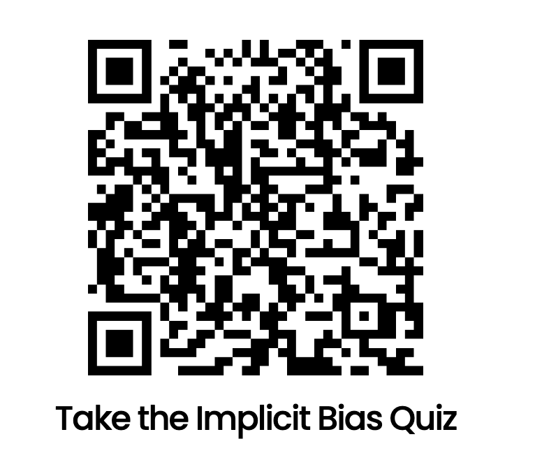

Team:
Simran, Kartikeye, Jaylene, and Sam have worked together to put together a test for LIS500, with the goal of producing a superior version of the Harvard Implicit Bias Test.
The Test:
The Implicit association test (IAT) is meant to measure attitudes and beliefs that people may be unwilling or unable to report. It is designed to show the strength of associations between concepts to reveal the participant’s hidden biases. Though, the original Harvard IAT has inconsistent scores based on the speed of association (associating a brown/black person with a good/bad verb based on how quick you click a button). With the Harvard implicit bias test, we are unable to rule out alternative explainations/views on certain groups based on the participants’ ability to mix/match things.
We developed an alternative test to focus on the experience of women of color in the workplace. Our questions are meant to assess how women of color navigate and contribute to their work environment. If we know more about peoples bias regarding this topic, we can take the correct measures to attempt to correct any bias people may have. Acknowledging bias can lead to change in the experience of women of color in the workplace since bias has such a powerful impact on groups they are made for. With incorporating demographics and changing the typical questions that would be on the test into being measured by a Likert Scale, we will be able to truely discover the participants bias.
The test should be relatively short to complete, so please take your time 😊
